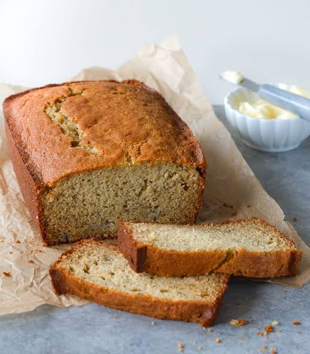

Banana_Bread

Description
This is one of my personal favorites discovered by Emily during welcome week 2023. It was truly a master piece eating after helping out during the Radio City event
All credits to Trader Joes for having one of the best banana bread
Ingridients
- Lots of love
- Bananas
- All purpose flour
- mixing bowl
Steps
- First fill all other ingridients with love
- Put in the mashed bananas and flour in the mixing bowl
- mix and cook in the oven at 350F for 30 minutes